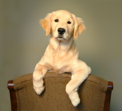
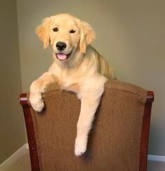
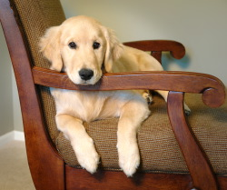
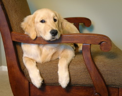
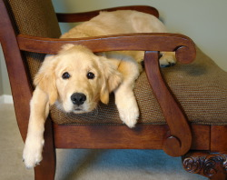

My own private experience poll has proven that few pets really understand the simple commands: sit and stay. Since this is more often than not the norm, please don’t be apologetic if your pet falls into this category. However, both for you and your animal’s happiness I strongly advise a bit of training. Like discipline for children, animals who understand limits are more secure and happier. It certainly helps my job and will make living with your pet even more rewarding.
Since I shoot with quite slow exposures, and no flash, to get the kind of close-up clarity we both expect, an animal that stays on command makes for a quicker and more pleasant session experience for the owner, for the animal and me too.
Models get big bucks for a reason but many of my subjects can be coaxed to work very hard to show me their best. And, I’m not proud…have treats available. When all else fails, we can use a leash. I’ve become very proficient at painting out bridles, leashes and collars. I’ll never tell if you don’t.
A special word for cat owners…just help me find a room where we can shut the doors and they can’t hide. I share my house with four cats and speak fluent “catonese.”

 |
 |
 |
 |
 |